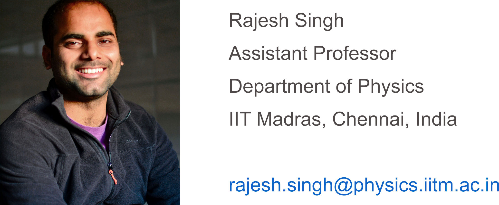

Biography
Rajesh Singh is an assistant professor in the Department of Physics at the Indian Institute of Technology Madras, Chennai. His research interests are in the field of theoretical soft condensed matter physics. With this principal theme, he studies problems in statistical mechanics, fluid mechanics, computational physics, biophysics, and Bayesian statistics. His current research focuses on the nonequilibrium statistical mechanics of active and driven systems.
External Links: Speaker Deck | Google Scholar | GitHub | Flickr | Blog
Scientific positions and education
| Since 21 | Assistant Professor, Department of Physics, IIT Madras, Chennai |
| 2018-21 | Postdoctoral research associate, DAMTP, University of Cambridge |
| 2012-18 | PhD, The Institute of Mathematical Sciences, Chennai |
| 2010-12 | MSc, Indian Institute of Technology Kanpur |
| 2007-10 | BSc, Hindu College, University of Delhi |
Awards and fellowships
| 2022 | Start-up Research Grant, SERB, India |
| 2021 | RAMP Early Career Investigator Award, Royal Society, United Kingdom |
| 2021 | Early Career Fellowship (declined), Leverhulme Trust, United Kingdom |
| 2017 | Newton International Fellowship, Royal Society-SERB, United Kingdom |
| 2010 | Among the top 25 in the National Graduate Physics Examination, India |
Contact
|
 |
Rajesh Singh
Assistant Professor Department of Physics IIT Madras, Chennai, India rsingh _at_ physics [dot] iitm.ac.in |